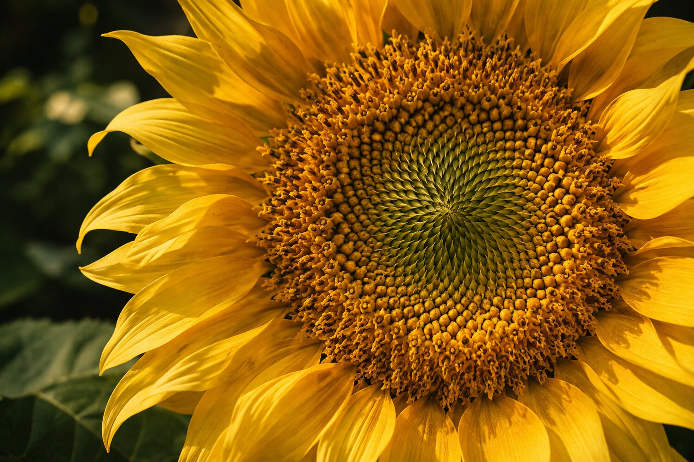

Triển lãm phỏng sinh học
Học từ thiên nhiên.
Khám phá cách học sinh khối 12 quan sát thế giới sống và vận dụng những nguyên lý ấy vào thiết kế.
Bộ sưu tập

Khám phá cách học sinh khối 12 quan sát thế giới sống và vận dụng những nguyên lý ấy vào thiết kế.